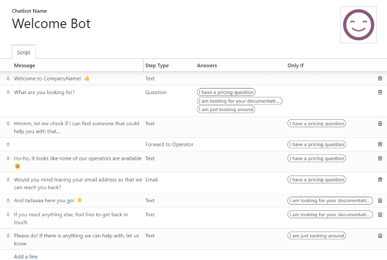

Chatbots¶
A Chatbot is a program designed to mimic a conversation with a live human. Chatbots are assigned a script of pre-written steps to follow. The scripts are designed to anticipate a visitor’s potential response, and lead them through a series of questions and answers the same way a live team member would.
Chatbots can be customized to fill various roles, from customer support, to creating leads, to collecting contact information. The goal of the chatbot depends on the page of the website they are assigned, and the messages included in the script, among other criteria.
Build a chatbot¶
Before creating a new chatbot, the Live Chat application must first be installed on the database.
This can be done directly from the menu by searching for Live Chat in the
search bar and clicking Install.
Alternatively, Live Chat can be installed and enabled by navigating to the , and checking the box labeled Livechat. Once enabled, the database will refresh, and the Live Chat application is accessible.
Once the Live Chat application has been installed on the database, open it, and go to .
Note
When the Live Chat app is installed, a sample chatbot is created, named Welcome Bot. This chatbot has a pre-configured script that walks through a few basic steps, including asking for a visitor’s email address, and forwarding the conversation to an operator.
Welcome Bot can be used as a starting point. The existing steps can be edited or removed, and new steps can be added to customize the script, as needed.
Welcome Bot can be deleted (or archived).
To create a new chatbot, navigate to the Chatbot page () and click New. This opens a blank chatbot details page.
On the blank chatbot details page, enter a name in the Chatbot Name field and click on the Edit Image icon in the upper right corner of the form to add a photo.
Chatbot scripts¶
Once the new chatbot has been created and named, the next step is to create a script. Chatbot conversations follow an accompanying script. These scripts are comprised of lines of dialogue, each designed to either deliver or capture information.
To create a chatbot script, navigate to the Script tab of the chatbot details page, and click Add a Line to open the Create Script Steps pop-up form.
This form must be filled out for each line of text (dialogue) that the chatbot could potentially deliver during the conversation.
First, enter the content of the message in the Message field. Then, select an option from the Step Types drop-down menu.
Step types¶
The Step Type selected depends on the intended purpose of the message. The available options in the Step Type drop-down are listed below, as well as their use, and any additional information:
Text¶
This step is used for messages where no answer is expected (or necessary). Text steps can be used for greetings and/or to deliver information.
Important
Text step types are only intended to deliver information, and do not allow for any visitor input. As such, they need to be followed by additional steps to continue the conversation.
Question¶
This step asks a question and provides a set of answers. The visitor clicks on one answer, which either leads to a new step in the conversation, or can lead to an optional link to a new webpage.
Tip
It is helpful to add a catchall answer to question steps (ex: “Something else”). This helps visitors continue the conversation, even if their needs don’t exactly fit with any of the other answers.
Email¶
This step prompts visitors to provide their email address, which is stored and can be used by team members later to follow up with additional information.
The only accepted inputs for this step type are email addresses that are in a valid format. If a visitor attempts to enter anything other than a valid email address, the chatbot responds with a message stating it does not recognize the information submitted.

Phone¶
Similar to email, this step type prompts the visitor to enter their phone number, which can be used at a later time to follow up with additional information, or to schedule demos, and more.
Warning
Due to the vast number of formats used for phone numbers worldwide, responses to this step type are not validated for formatting.
Forward to Operator¶
This step forwards the conversation to an active live chat operator, so that they can continue assisting the visitor. As the conversation transcript is passed on to the operator they are able to pick up where the chatbot left off. This not only saves time for all parties involved, it can also help qualify conversations before they reach live human operators.
Note
If no active operator is available on the channel, the chatbot continues the conversation with the visitor. Therefore, additional steps should be added after this one to ensure that there is no abrupt end to the conversation.

Free Input/Multi-Line¶
The free input step allows visitors to respond to questions without providing pre-written responses. Information provided in these responses is stored in the chat transcripts.
Choose between Free Input and Free Input (Multi-Line) depending on the type and amount of information being requested from the visitor.
Create Lead¶
This step creates a lead in the CRM application. Select an option from the Sales Team drop-down to assign the created lead to a specific team.
Create Ticket¶
This step creates a ticket in the Helpdesk application. Select an option from the Helpdesk Team drop-down to assign the created ticket to a specific team.
Only if¶
Chatbot scripts operate on an if/then basis, which means the next question presented to the visitor is determined by the answer they provide to the previous question.
To continue the progression of the conversation, the form for a new step contains a field labeled Only If. This field is where the progression of questions is defined.
If a step is intended to follow all of the previous messages, this field can be left empty. However, if a message should only be sent conditionally, based on a previous response (or several previous responses), those responses need to be added to this field.
Important
If there are any selections made in the Only If field, the step will not be shown in a conversation unless all of the answers have been selected. Only include selections in this field if they are necessary for this step to be displayed.
Example
In the Welcome Bot script, a visitor can ask about pricing information. If the visitor selects this response, a step is included to forward the conversation to an operator. The chatbot first sends a message informing the visitor that it is checking to see if an operator is available to chat.
However, this message should only be delivered if the visitor requests pricing information. In that situation, the conversation would proceed as below:
Welcome Bot: “What are you looking for?”
Visitor: “I have a pricing question.”
Welcome Bot: “Hmmm, let me check if I can find someone that could help you with that…”
In the details form for the Text step, the I have a pricing question response has been selected in the Only If field. As such, this step is only shown in conversations where that response has been selected.

Script testing¶
In order to ensure all visitors have a satisfactory experience with the chatbot, each message needs to lead to a natural conclusion. Chatbot scripts should be tested to confirm there are no dead-ends, and to get an understanding of what the visitor sees when they interact with the chatbot.
Important
If there is an answer or input provided by the visitor that is not assigned a corresponding follow-up response, the conversation stops (dead-end). Since the visitor cannot re-engage the chatbot, they will have to re-start the conversation, by refreshing the chat window, or their browser.
To test the performance of a chatbot, first click on the Test button at the top-left of the chatbot script page. Then, upon being redirected to the testing screen, answer the chatbot prompts the same way a potential site visitor would.
When the script has reached an end-point, the message Conversation ended…Restart appears at the bottom of the chat window. To begin the conversation at the beginning of the script, click on Restart. To return to the script page, click Back to edit mode at the top of the page.
Add chatbot to a channel¶
After a chatbot has been created and tested, it needs to be added to a live chat channel.
First, open the application, and select the kanban card for a Channel, or create a new one. Click on the Channel Rules tab. Then, open an existing rule, or create a new one by clicking Add a line.
On the Create Rules pop-up detail form, choose the appropriate chatbot in the Chatbot field.
If the chatbot should only be active if there are no available live chat operators, check the box labeled Enabled only if no operator.

See also